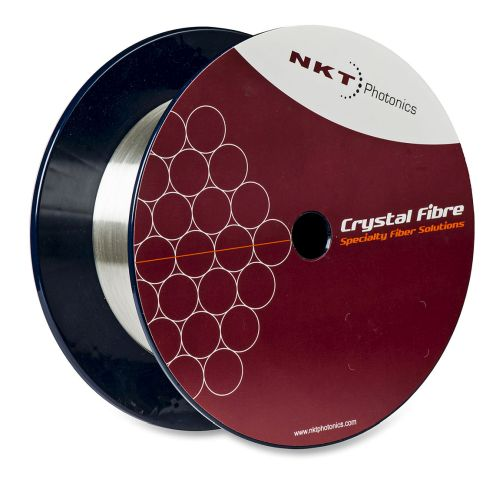
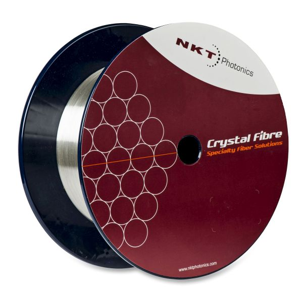
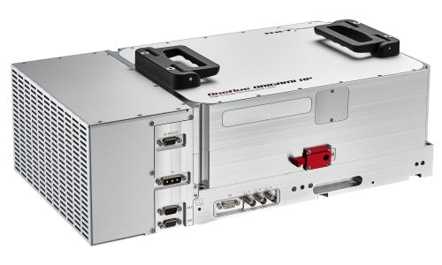
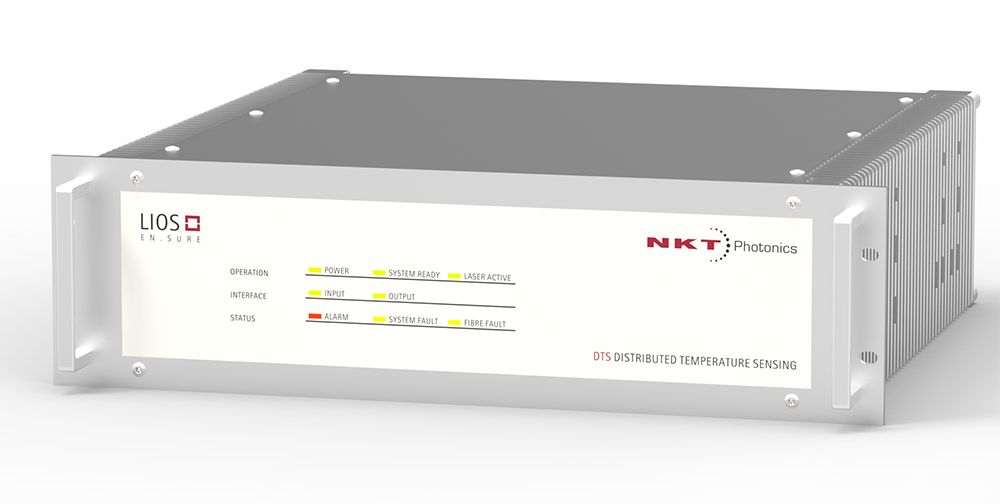
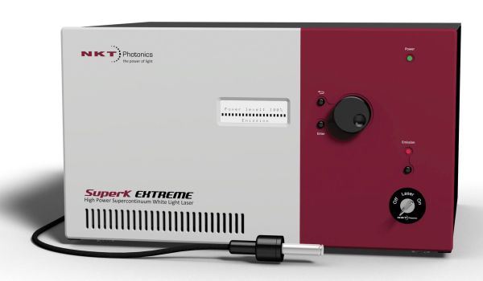

Company profile:
NKT Photonics

NKT Photonics
Blokken 84
3460 Birkerød
Denmark
| Tel.: | +45 4348 39 00 |
| Fax: | +45 4348 39 01 |
| Website: | www.nktphotonics.com |
| Social media: | Facebook, LinkedIn, Twitter, YouTube |
| Quality certification: | ISO 9000:2015 |
Company Description
NKT Photonics is the leading supplier of high performance fiber lasers, fiber optic sensing systems, and photonic crystal fibers. Our main markets are within imaging, sensing and material processing. Our products include ultrafast lasers, supercontinuum white light lasers, low noise fiber lasers, distributed temperature sensing systems and a wide range of specialty fibers. NKT Photonics has its headquarters in Denmark with sales and service worldwide. NKT Photonics is wholly owned by NKT Holding A/S.
We have lasers in space and deep under the oceans and our products run in both clean rooms and on oil rigs at sea. We seed the world’s largest laser fusion experiment and power hundreds of the most advanced microscopes on the Globe. We aim to make a difference in the World and we are involved in projects that will transform the way we live through life-science, renewable energy and the basic understanding of the Universe. With over fifteen years of expertise, IP and experience, NKT Photonics strives to continually be the market leader in everything we do.
Exhibitions
See us at Laser World of Photonics China 2019 in Shanghai, March 20–22 (booth W2.2436)!
Products
| Product | Description |
|---|---|
| blue lasers |  As part of our PILAS range of gain-switched pulsed diode lasers, we offer several blue lasers: The PiL040 with a wavelength of 405 nm, the Pil044 with a wavelength of 440 nm, and the PiL048 with a wavelength of 480 nm. All PILAS lasers offer triggable pulses down to 20 ps in a small footprint for both scientific and OEM applications. Available with output wavelengths from 375 nm to 1.6 μm, the PILAS lasers are very versatile and comes with low timing jitter, maintenance-free operation, and low cost of ownership. |
| diode lasers |  Our PILAS range of gain-switched pulsed diode lasers offers triggable pulses down to 20 ps in a small footprint for both scientific and OEM applications. Available with output wavelengths from 375 nm to 1.6 μm, the PILAS lasers are very versatile and comes with low timing jitter. |
| diode-pumped lasers |  NKT Photonics offers a wide range of diode-pumped, industrial ultrafast fiber lasers as well as scientific ultrafast fiber lasers. All lasers are maintenance-free and packaged in a dust-sealed enclosure allowing for operation in the harshest environments. The combination of advanced fiber laser technology and nonlinear frequency conversion results in a broad range of wavelengths, from UV to infrared, and pulse durations from femtosecond to nanosecond. |
| distributed feedback lasers |  The Koheras narrow linewidth, single-frequency fiber lasers are ultra-low noise sources with longitudinal single mode and single frequency operation. The lasers are based on a DFB design ensuring robust and reliable operation and are delivered as fully integrated systems for industrial and scientific applications. Koheras offers an unprecedented low phase- and intensity noise level at Yb, Er and Tm wavelengths. It has a very high stability, and mode-hop free inherent single frequency output – even when exposed to changing environmental conditions. You can also get shot noise limited solutions for applications demanding an extra low intensity noise level. |
| double-clad fibers |  NKT Photonics offers a range of truly single-mode ytterbium-doped double-clad fibers with very large mode area. Our Ytterbium doped double clad fibers offers the largest single-mode cores in the world enabling amplification to unprecedented power levels while keeping mode quality and stability. Packaged in an aeroGAIN gain module, the high performance of our fibers, are easily accessible for building for high-power lasers and amplifiers. Also available with end caps and connectors. |
| femtosecond lasers |  Origami is our ultra-stable passively mode-locked laser platform, it exhibits the lowest phase noise on the market. A special hybrid laser setup, consisting of state-of-the-art polarization maintaining (PM) fiber technology and free-space sections for advanced dispersion control, allows for high pulse energy generation while supporting perfectly transform-limited soliton pulses without spectral ripples, excess of optical bandwidth, Kelly-sidebands, temporal pedestals or satellite pulses. The Origami lasers are designed for all precision applications, scientific or industrial, requiring long-term amplitude stability, low phase noise and timing jitter, compact and rugged design and 24/7 maintenance-free operation. |
| fiber lasers |  The Koheras narrow linewidth, single-frequency fiber lasers are ultra-low noise sources with longitudinal single mode and single frequency operation. The lasers are based on a DFB design ensuring robust and reliable operation and are delivered as fully integrated systems for industrial and scientific applications. Koheras offers an unprecedented low phase- and intensity noise level at Yb, Er and Tm wavelengths. It has a very high stability, and mode-hop free inherent single frequency output – even when exposed to changing environmental conditions. You can also get shot noise limited solutions for applications demanding an extra low intensity noise level. |
| fiber optics |  Optical fibers are at the heart of everything we do at NKT Photonics. We utilize our unique PCF technology to embed as many of the functions we need directly in the fibers, making systems built with our fibers simpler, cheaper and more reliable. Our Crystal Fiber portfolio of specialty fibers spans from nonlinear fibers optimized for octave-spanning supercontinuum generation, over the World’s largest single mode ytterbium gain fibers for high power lasers and amplifiers, to advanced hollow-core fibers. Our single-mode LMA fibers are also available as patch cords with standard termination in our aeroGUIDE product range. Moreover, we offer the CONNECT broadband fiber delivery system. |
| fiber patch cables |  Our Crystal Fiber portfolio of specialty fibers spans from nonlinear fibers optimized for octave spanning supercontinuum generation, over the World’s largest single mode ytterbium gain fibers for high power lasers and amplifiers, to advanced hollow core fibers guiding the light in air. Our single-mode LMA fibers are available as patch cords with standard termination in our aeroGUIDE product range. Moreover, we offer the CONNECT broadband fiber delivery system, enabling easy and robust single mode coupling for fiber delivery at any wavelength – with the industry’s highest coupling efficiency. |
| fiber-optic sensors (… and related equipment) |  With the LIOS Sensing product line, NKT Photonics is the market leader in distributed optical sensing of temperature and strain for security, safety and fire detection. Backed by more than 20 years of experience and thousands of systems in the field worldwide, we deliver LIOS monitoring solutions with unrivaled quality and performance. Our LIOS distributed temperature and strain sensing solutions give you a quick and easy overview of the status of your installation. We use passive optical fibers as distributed sensors, they are immune to vibration, electromagnetic noise, dust, cryogenic temperatures, and moisture. You get continuous and accurate monitoring of temperature and strain over long distances or across large surfaces – at the speed of light! It is highly reliable too, offering you a Mean Time Between Failure of above 45 years. |
| fibers (optical …) |  Our Crystal Fibre portfolio of specialty fibers spans from nonlinear fibers optimized for octave spanning supercontinuum generation, over the World’s largest single mode ytterbium gain fibers for high power lasers and amplifiers, to advanced hollow core fibers guiding the light in air. Our single-mode LMA fibers are also available as patch cords with standard termination in our aeroGUIDE product range. |
| gain media (laser crystals and glasses) |  Our ytterbium doped double clad fibers offer the largest single-mode cores in the world enabling amplification to unprecedented power levels while keeping mode quality and stability. Packaged in an aeroGAIN gain module, the high performance of our fibers is easily accessible for building picosecond or femtosecond ultrafast fiber lasers. |
| green lasers |  Thanks to the combination of fiber laser technology and nonlinear frequency conversion, NKT Photonics offers a wide choice of green pulsed lasers from femtosecond to nanosecond pulse duration. Average power ranges from several μW to a few W, and pulse energies from several pJ to hundreds microjoules. NKT Photonics green lasers find applications in many different fields, from microscopy to material characterization and material processing. On top of this, we offer our PILAS gain-switched pulsed diode laser range where the PiL051 has a wavelength of 510 nm. |
| high-power fiber lasers and amplifiers |  The Koheras BoostiK high power single frequency fiber lasers is an ultra-low noise and narrow linewidth laser. An output power of up to 15 W makes it ideal for laboratory work and experimental research. Choose the operating wavelength freely in the 1 or 1.5-μm range. The excellent beam quality enables efficient frequency conversion. The combination of ultra-low noise, narrow line width and high power output makes the Koheras BOOSTIK laser a highly versatile system for a long range of applications such as optical length and frequency standards, quantum optics/computing & phenomena (optical trapping, Bose–Einstein condensate, atom interferometer, squeezing), nonlinear optics pump source, laser-based metrology (precision laser interferometry, spectroscopy), optical heterodyning and coherent communication and coherent beam combining. |
| hollow-core fibers |  Our Crystal Fiber portfolio of specialty fibers spans from nonlinear fibers optimized for octave spanning supercontinuum generation, over the World’s largest single mode ytterbium gain fibers for high power lasers and amplifiers, to advanced hollow core fibers guiding the light in air. Our single-mode LMA fibers are also available as patch cords with standard termination in our aeroGUIDE product range. Moreover, we offer the CONNECT broadband fiber delivery system, enabling easy and robust single mode coupling for fiber delivery at any wavelength – with the industry’s highest coupling efficiency. |
| large mode area fibers | The selection of Crystal Fiber Large Mode Area fibers covers a range of fibers for diffraction limited high power delivery. The very large mode area enables high power levels without nonlinear effects or material damage. With standard technology you must trade large mode areas for single-mode operation, but the Crystal Fibre Large Mode Area fibers provide single mode operation in a large wavelength range – endlessly single mode operation. |
| large-core fibers |  Our Crystal Fibre portfolio of specialty fibers spans from nonlinear fibers optimized for octave spanning supercontinuum generation, over the World’s largest single mode ytterbium gain fibers for high power lasers and amplifiers, to advanced hollow core fibers guiding the light in air. Our single-mode LMA fibers are also available as patch cords with standard termination in our aeroGUIDE product range. |
| laser noise (low-noise lasers or equipment for the characterization of …) |  The Koheras narrow linewidth, single-frequency fiber lasers are ultra-low noise sources with longitudinal single mode and single frequency operation. The lasers are based on a DFB design ensuring robust and reliable operation and are delivered as fully integrated systems for industrial and scientific applications. Koheras offers an unprecedented low phase- and intensity noise level at Yb, Er and Tm wavelengths. It has a very high stability, and mode-hop free inherent single frequency output – even when exposed to changing environmental conditions. You can also get shot noise limited solutions for applications demanding an extra low intensity noise level. |
| lasers |  NKT Photonics offers a wide range of lasers spanning from pulsed diode lasers over ultra-low noise single-frequency fiber lasers and scientific and industrial ultrafast lasers to supercontinuum white light lasers. Whatever your laser need, we have a system for you! |
| linewidth (narrow-linewidth lasers or equipment for linewidth measurements) |  The Koheras narrow linewidth, single-frequency fiber lasers are ultra-low noise sources with longitudinal single mode and single frequency operation. The lasers are based on a DFB design ensuring robust and reliable operation and are delivered as fully integrated systems for industrial and scientific applications. Koheras offers an unprecedented low phase- and intensity noise level at Yb, Er and Tm wavelengths. It has a very high stability, and mode-hop free inherent single frequency output – even when exposed to changing environmental conditions. You can also get shot noise limited solutions for applications demanding an extra low intensity noise level. |
| medical lasers |  For a decade, NKT Photonics has been supplying ultrafast lasers for medical applications such as ophthalmology, dermatology and various surgical operations. The lasers stand out for their excellent pulse quality and amplitude stability, which allow full control of the treatment depth. High beam and pulse quality assures the correct localization of laser energy on tissues. Advanced packaging guarantees small packaging and sustained performance and reliability in 24/7 operation at low cost of ownership. Our ultrafast medical lasers are RoHs compliant and ISO 13485 certified. Also, our supercontinuum lasers are widely used in medical applications. |
| mode-locked fiber lasers |  NKT Photonics passively mode-locked lasers, for industrial and scientific use, exhibit a compact packaging and the lowest phase noise on the market. A special hybrid laser setup, consisting of state-of-the-art polarization maintaining (PM) fiber technology and advanced dispersion control, allows for high pulse energy generation while supporting perfectly transform-limited soliton pulses without Kelly-sidebands, temporal pedestals or satellite pulses. NKT Photonics lasers have been designed for high precision applications requiring long-term amplitude stability, low phase noise and timing jitter and 24/7 maintenance-free operation. |
| mode-locked lasers |  NKT Photonics passively mode-locked lasers, for industrial and scientific use, exhibit a compact packaging and the lowest phase noise on the market. A special hybrid laser setup, consisting of state-of-the-art polarization maintaining (PM) fiber technology and advanced dispersion control, allows for high pulse energy generation while supporting perfectly transform-limited soliton pulses without Kelly sidebands, temporal pedestals or satellite pulses. NKT Photonics lasers have been designed for high precision applications requiring long-term amplitude stability, low phase noise and timing jitter and 24/7 maintenance-free operation. |
| nanosecond lasers |  If you need a versatile, sub-nanosecond pulsed laser system designed for all industrial applications, the KATANA laser is an excellent choice. If you need high power, choose the KATANA HP. In the standard configuration, the KATANA HP provides pulses of 35 or 700 ps duration, depending on the model. The standard pulse repetition rate is either 100 kHz to 1 MHz or 20 to 80 MHz. The laser pulse can be triggered from an external source (in either master or slave mode). Continuous tuning of the repetition rate is standard. No alignment is required making this laser maintenance-free and ensures you a low cost of ownership. |
| narrow-linewidth lasers |  The Koheras narrow linewidth, single-frequency fiber lasers are ultra-low noise sources with longitudinal single mode and single frequency operation. The lasers are based on a DFB design ensuring robust and reliable operation and are delivered as fully integrated systems for industrial and scientific applications. Koheras offers an unprecedented low phase- and intensity noise level at Yb, Er and Tm wavelengths. It has a very high stability, and mode-hop free inherent single frequency output – even when exposed to changing environmental conditions. You can also get shot noise limited solutions for applications demanding an extra low intensity noise level. |
| photonic bandgap fibers |  Our Crystal Fiber portfolio of specialty fibers spans from nonlinear fibers optimized for octave spanning supercontinuum generation, over the World’s largest single mode ytterbium gain fibers for high power lasers and amplifiers, to advanced hollow core fibers guiding the light in air. Our single-mode LMA fibers are also available as patch cords with standard termination in our aeroGUIDE product range. Moreover, we offer the CONNECT broadband fiber delivery system, enabling easy and robust single mode coupling for fiber delivery at any wavelength – with the industry’s highest coupling efficiency. |
| photonic crystal fibers |  Our Crystal Fibre portfolio of specialty fibers spans from nonlinear fibers optimized for octave spanning supercontinuum generation, over the World’s largest single mode ytterbium gain fibers for high power lasers and amplifiers, to advanced hollow core fibers guiding the light in air. Our single-mode LMA fibers are also available as patch cords with standard termination in our aeroGUIDE product range. |
| picosecond lasers |  NKT Photonics has developed a wide range of different picosecond fiber lasers for scientific and industrial applications. The Genki platform is based on passively mode-locking and offers pulse durations from 1 to 45 ps, wavelengths from UV to visible and IR, high amplitude and timing stability and low phase noise. The Katana platform offers from 20 ps to nanosecond pulse durations, continuously tuneable repetition rate that can be triggered internally or externally allowing for laser operation in both master and slave mode. Katana is streamlined to offer high-power picosecond pulses in green, yellow, orange, red and infrared. |
| polarization-maintaining fibers |  NKT Photonics offers several types of broadband (UV–nIR) single-mode polarization-maintaining fibers |
| pulsed lasers |  NKT Photonics offers a wide variety of pulsed fiber lasers, for industrial and scientific applications that covers a wide spectral range from UV to visible and infrared. The lasers are air-cooled and maintenance-free and packaged in a sealed, robust enclosure allowing for operation in the harshest environmental conditions. Our more than ten years’ experience and deep knowledge in laser science allow us to offer lasers having industrial-grade reliability and robustness. We offer ultrafast lasers for industrial and scientific applications as well as a wide range of picosecond pulsed diode lasers. Our gain-switched pulsed diode lasers offer triggable pulses down to 20 ps in a small footprint for both scientific and OEM applications. |
| rare-earth-doped fibers |  Our ytterbium double clad fibers offer the largest single-mode cores in the world enabling amplification to unprecedented power levels while keeping mode quality and stability. Packaged in an aeroGAIN gain module, the high performance of our fibers are easily accessible for building picosecond or femtosecond ultrafast fiber lasers. |
| rare-earth-doped gain media |  Our ytterbium-doped double clad fibers offer the largest single-mode cores in the world enabling amplification to unprecedented power levels while keeping mode quality and stability. Packaged in an aeroGAIN gain module, the high performance of our fibers are easily accessible for building picosecond or femtosecond ultrafast fiber lasers. |
| red lasers | As part of our PILAS range of gain-switched pulsed diode lasers, we offer two different red lasers: The PiL063 with a wavelength of 635 nm and the Pil067 with a wavelength of 665 nm. All PILAS lasers offer triggable pulses down to 20 ps in a small footprint for both scientific and OEM applications. Available with output wavelengths from 375 nm to 1.6 μm, the PILAS lasers are very versatile and comes with low timing jitter, maintenance-free operation, and low cost of ownership. |
| RGB sources |  Use our white light supercontinuum lasers as RGB-source. |
| single-frequency lasers |  The Koheras narrow linewidth, single-frequency fiber lasers are ultra-low noise sources with longitudinal single mode and single frequency operation. The lasers are based on a DFB design ensuring robust and reliable operation and are delivered as fully integrated systems for industrial and scientific applications. Koheras offers an unprecedented low phase- and intensity noise level at Yb, Er and Tm wavelengths. It has a very high stability, and mode-hop free inherent single frequency output – even when exposed to changing environmental conditions. You can also get shot noise limited solutions for applications demanding an extra low intensity noise level. |
| single-frequency operation (single-frequency lasers or equipment for achieving … of lasers) |  The Koheras narrow linewidth, single-frequency fiber lasers are ultra-low noise sources with longitudinal single mode and single frequency operation. The lasers are based on a DFB design ensuring robust and reliable operation and are delivered as fully integrated systems for industrial and scientific applications. Koheras offers an unprecedented low phase- and intensity noise level at Yb, Er and Tm wavelengths. It has a very high stability, and mode-hop free inherent single frequency output – even when exposed to changing environmental conditions. You can also get shot noise limited solutions for applications demanding an extra low intensity noise level. |
| single-mode fibers |  NKT Photonics offers several types of broadband (UV–nIR) single-mode polarization-maintaining fibers with large mode area. They are also available with collimators and alignment mechanics as complete fiber delivery solutions. |
| single-polarization fibers |  NKT Photonics offers ytterbium-doped single-polarization fibers with large mode area for high power pulsed amplifiers. Also available with end caps and connectors. |
| solid-state lasers |  NKT Photonics offers a wide range of diode-pumped solid-state industrial ultrafast fiber lasers as well as scientific ultrafast fiber lasers. All lasers are maintenance-free and packaged in a dust-sealed enclosure allowing for operation in the harshest environments. The combination of advanced fiber laser technology and nonlinear frequency conversion results in a broad range of wavelengths, from UV to infrared, and pulse durations from femtosecond to nanosecond. |
| specialty fibers |  Optical fibers are at the heart of everything we do at NKT Photonics. We utilize our unique PCF technology to embed as many of the functions we need directly in the fibers, making systems build with our fibers simpler, cheaper and more reliable. Our Crystal Fiber portfolio of specialty fibers spans from nonlinear fibers optimized for octave spanning supercontinuum generation, over the World’s largest single mode ytterbium gain fibers for high power lasers and amplifiers, to advanced hollow core fibers guiding the light in air. Our single-mode LMA fibers are also available as patch cords with standard termination in our aeroGUIDE product range. |
| strain sensors |  We offer several types of fiber-based distributed strain measurement systems. With the LIOS EN.SURE cable strain measurement system you can measure the strain put on your power cable when unforeseen events happen and take appropriate actions. The LIOS PRE.VENT industrial strain measurement system enables monitoring of large processing plants, reactors, gasifiers and many other large industrial assets – even at remote locations. Operators can monitor thousands of measurement points, optimize operation and detect hazardous situations. For the oil & gas industry, we offer the LIOS WELL.DONE strain measurement system which is developed to meet the demand for low-cost, reliable and easily installable systems in harsh environments such as oil reservoirs. All the systems are maintenance–free and robust, they are the perfect flexible and cost-efficient solution. |
| supercontinuum generation (supercontinuum sources and materials for …) |  Our SuperK series is the industry leading range of turn-key supercontinuum lasers used by many of the most innovative companies within bio-imaging, semiconductor inspection and scientific instrumentation. The sources are extremely robust and reliable, build for intensive use and can replace multiple single line lasers, large dye and gas lasers as well as broadband sources like ASE sources and SLEDs. We offer supercontinuum solutions at every level – from nonlinear fiber and modules to complete turnkey SuperK supercontinuum lasers with plug & play accessories. |
| synchronization of lasers (equipment for the …) |  NKT Photonics provides industry leading plug-and-play synchronization solutions for its range of Origami ultrafast femtosecond lasers. Designed and demonstrated with femtosecond precision, synchronization, in combination with the Origami lasers, guaranteed reliable locking over long-time scales is provided, satisfying the requirements for high precision, synchronization applications such as optical timing distribution, time-resolved spectroscopy, frequency combs and other leading application where such precision is paramount. The Origami comes in three flavors: The Origami, the Origami HP, and the Origami XP. |
| temperature sensors |  Our robust linear temperature detections systems are based on optical fibers and perfect for hazardous environments such as chemical plants, mining conveyor belts, or other facilities requiring ATEX certification. LIOS DE.TECT is ideal for fire detection in tunnels, metros and large facilities like warehouses. LIOS EN.SURE is designed to monitor underground power cables and overhead transmission lines. LIOS PRE.VENT provides precise temperature monitoring, even at very large industrial sites or over long distances. LIOS WELL.DONE is developed for use in the oil & gas industry and is a reliable, low-cost and easily installable temperature monitoring solution. |
| tunable lasers |  The SuperK EXTREME supercontinuum white light lasers are broad as a lamp and bright as a laser. They deliver high brightness diffraction limited light in the entire 400–2400 nm region and by adding one of our computer-controlled filters, the SuperK VARIA, the SuperK can be converted into an ultra-tunable laser with up to 16 simultaneous lines, providing a continuous tunable output from 400 to 840 nm. Our SuperK lasers lasers are maintenance free and the fully fiber monolithic architecture ensures excellent reliability and a lifetime of thousands of hours. |
| ultrafast lasers |  NKT Photonics offers a wide range of diode-pumped, ultrafast fiber lasers for industrial as well as scientific applications. All lasers are maintenance-free and packaged in a dust-sealed enclosure allowing for operation in the harshest environments. The combination of advanced fiber laser technology and nonlinear frequency conversion results in a broad range of wavelengths, from UV to infrared, and pulse durations from femtosecond to nanosecond. Our more than ten years’ experience and deep knowledge in laser science allow us to offer lasers having industrial-grade reliability and robustness. |
| ultraviolet lasers | As part of our PILAS range of gain-switched pulsed diode lasers, we offer an ultraviolet laser: The PiL037 with a wavelength of 375 nm. All PILAS lasers offer triggable pulses down to 20 ps in a small footprint for both scientific and OEM applications. Available with output wavelengths from 375 nm to 1.6 &,u;m, the PILAS lasers are very versatile and comes with low timing jitter, maintenance-free operation, and low cost of ownership. |
| white light interferometers |  Our SuperK series is the industry leading range of turn-key supercontinuum lasers. The sources are extremely robust and reliable. The continuous, low-coherence output from 400 to 2400 nm make them highly suitable for white light interferometer applications. |
| white light sources |  Our SuperK series is the industry leading range of turn-key supercontinuum lasers used by many of the most innovative companies within bio-imaging, semiconductor inspection and scientific instrumentation. The sources are extremely robust and reliable, build for intensive use and can replace multiple single line lasers, large dye and gas lasers as well as broadband sources like ASE sources and SLEDs. We offer supercontinuum solutions at every level – from nonlinear fiber and modules to complete turnkey SuperK supercontinuum lasers with plug & play accessories. Our turnkey SuperK supercontinuum lasers have a lifetime of several thousand hours and high power output from 400 to 2400 nm. |
| yellow and orange lasers |  The Katana 06 HP is a high-power, yellow and orange, picosecond fiber laser. It delivers short pulses from 70 ps up to 10 ns in the spectral range 556–660 nm and up to 1 W average power. Its continuously tuneable repetition rate can be triggered from an internal or external source (master or slave operation), making synchronization to external equipment a breeze. Katana 06 HP is an alignment-free, industrial-grade laser module that opens the way to new developments in laser treatment and life science like fluorescence and STED microscopy, flow cytometry and photocoagulation. |
| ytterbium-doped gain media |  NKT Photonics offers a range of truly single-mode ytterbium-doped double-clad fibers with very large mode area. Our ytterbium-doped double clad fibers offers the largest single-mode cores in the world enabling amplification to unprecedented power levels while keeping mode quality and stability. Packaged in an aeroGAIN gain module, the high performance of our fibers, are easily accessible for building for high-power lasers and amplifiers. Also available with end caps and connectors. |
Information of NKT Photonics Appears on the Following Pages
Company profile (this page)
Pages with Suppliers for Products
blue lasers, diode lasers, diode-pumped lasers, distributed feedback lasers, double-clad fibers, femtosecond lasers, fiber lasers, fiber optics, fiber patch cables, fiber-optic sensors, fibers, gain media, green lasers, high-power fiber lasers and amplifiers, hollow-core fibers, large mode area fibers, large-core fibers, laser noise, lasers, linewidth, medical lasers, mode-locked fiber lasers, mode-locked lasers, nanosecond lasers, narrow-linewidth lasers, photonic bandgap fibers, photonic crystal fibers, picosecond lasers, polarization-maintaining fibers, pulsed lasers, rare-earth-doped fibers, rare-earth-doped gain media, red lasers, RGB sources, single-frequency lasers, single-frequency operation, single-mode fibers, single-polarization fibers, solid-state lasers, specialty fibers, strain sensors, supercontinuum generation, synchronization of lasers, temperature sensors, tunable lasers, ultrafast lasers, ultraviolet lasers, white light interferometers, white light sources, yellow and orange lasers, ytterbium-doped gain media
Encyclopedia Articles
blue lasers, diode lasers, diode-pumped lasers, distributed feedback lasers, double-clad fibers, femtosecond lasers, fiber lasers, fiber optics, fiber patch cables, fiber-optic sensors, fibers, gain media, green lasers, high-power fiber lasers and amplifiers, hollow-core fibers, large mode area fibers, large-core fibers, laser noise, lasers, linewidth, mode-locked fiber lasers, mode-locked lasers, nanosecond lasers, narrow-linewidth lasers, photonic bandgap fibers, photonic crystal fibers, picosecond lasers, polarization-maintaining fibers, pulsed lasers, rare-earth-doped fibers, rare-earth-doped gain media, red lasers, RGB sources, single-frequency lasers, single-frequency operation, single-mode fibers, single-polarization fibers, solid-state lasers, specialty fibers, supercontinuum generation, synchronization of lasers, tunable lasers, ultrafast lasers, ultraviolet lasers, white light interferometers, white light sources, yellow and orange lasers, ytterbium-doped gain media
Profiles of Other Suppliers
NKT Photonics is shown as alternative supplier on 472 pages of other suppliers not having an ad package.
Other Pages
On various pages, a banner can randomly show up which displays a random selection of logos of suppliers with an ad package.